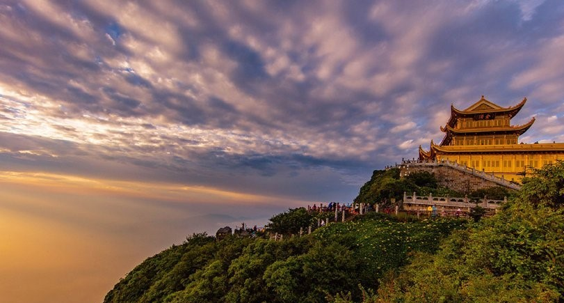

景点名称:峨眉山
推荐指数:★★★★★
景点门票：老人票（免费)儿童票（1.2m以下免费)成人票（80元/人）
峨眉山是国家AAAAA级风景区，神秘的礼佛圣地，有“普贤者，佛之长子,峨眉者，山之领袖”之称,位于乐山市峨眉山市名山南路41号峨眉山（西南门）附近。 峨眉山自然遗产极其丰富，素有天然“植物王国”、“动物乐园”、“地质博物馆”之美誉。 文化遗产极其深厚，是中国佛教圣地，被誉为“佛国 天堂”，是普贤菩萨的道场。以其“雄、秀、神、奇、灵”的自然景观和深厚的佛教文化，被联合国教科文组织列入《世界文化与自然遗产名录》。峨眉山景点有：金顶、万年寺、报国寺、雷洞坪、清音阁、一线天、接引殿、洗象池、洪椿坪、伏虎寺、九十九道拐等等...